Afghanistan · AFG
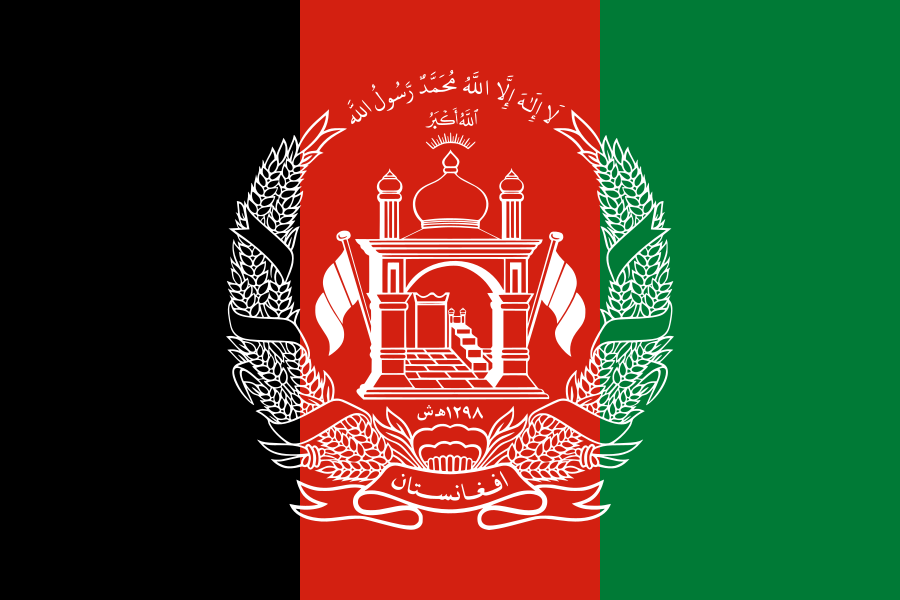
Aspect 1.5 · 24 crops
black 32%
white 8.3%
red 27.3%
green 32.4%
Accepted together: AFG
Nearest designs: MWI, VUT, KEN, KWT, LBY
Percentages are classified pixel areas, rounded to 0.1%. Includes spoilers. Method and sources.

Aspect 1.5 · 24 crops
Accepted together: AFG
Nearest designs: MWI, VUT, KEN, KWT, LBY
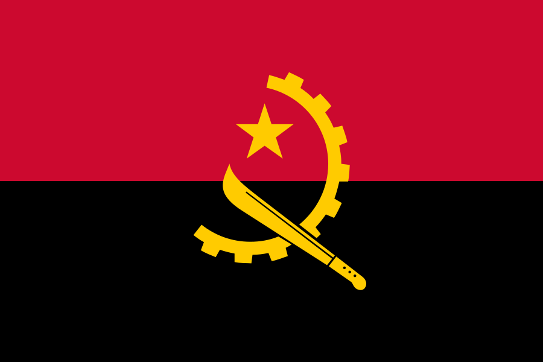
Aspect 1.5 · 24 crops
Accepted together: AGO
Nearest designs: PNG, EGY, YEM, IRQ, SDN
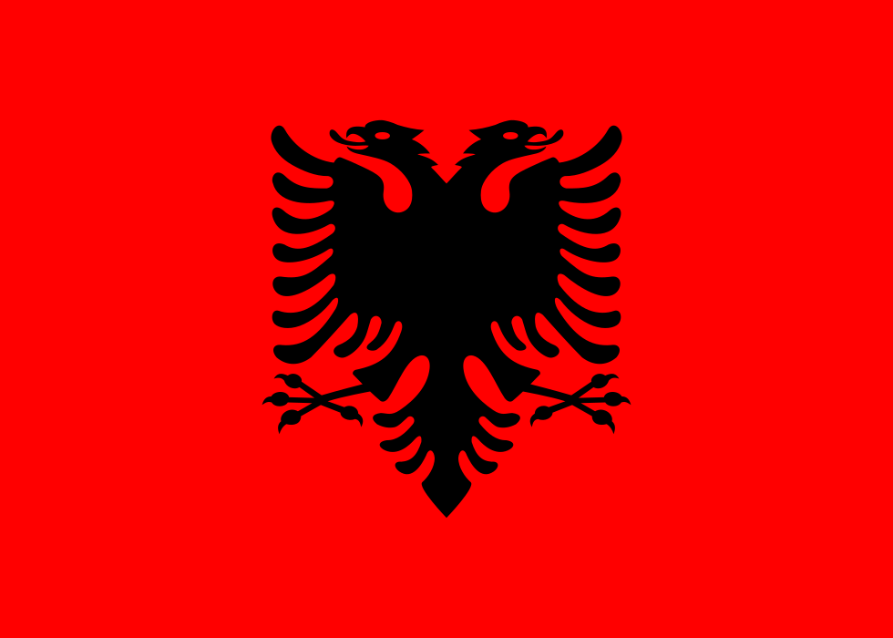
Aspect 1.4 · 24 crops
Accepted together: ALB
Nearest designs: CHN, MAR, VNM, TUN, TUR
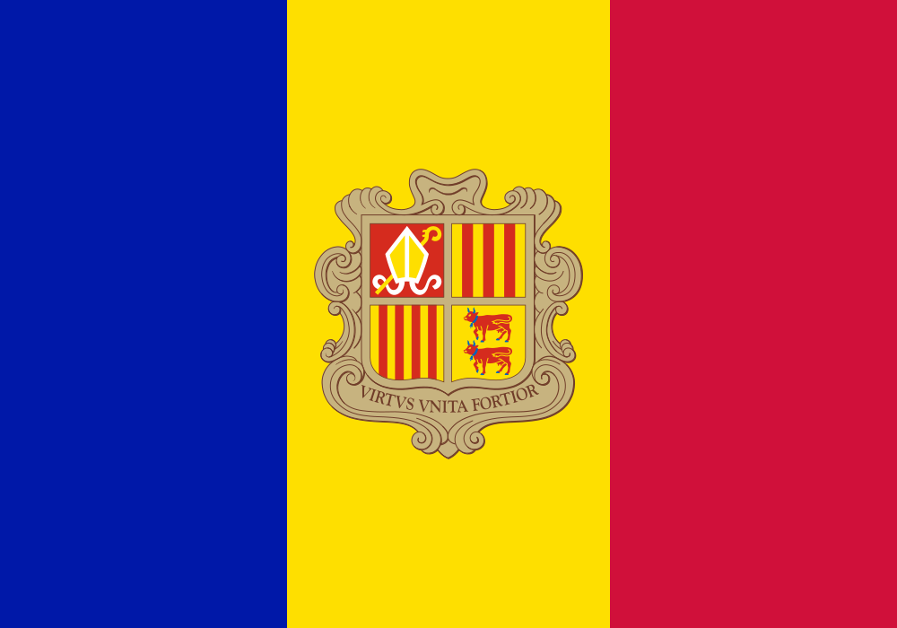
Aspect 1.42857143 · 24 crops
Accepted together: AND
Nearest designs: ROU, TCD, MDA, VEN, FRA
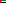
Aspect 2 · 24 crops
Accepted together: ARE
Nearest designs: SYR, KWT, SDN, IRN, IRQ
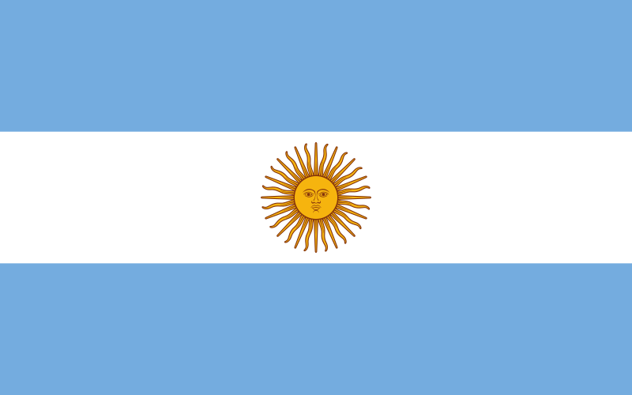
Aspect 1.6 · 24 crops
Accepted together: ARG
Nearest designs: NIC, SLV, HND, ISL, CPV
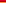
Aspect 2 · 24 crops
Accepted together: ARM
Nearest designs: GMB, LAO, HRV, PRY, NLD
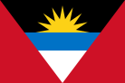
Aspect 1.5 · 24 crops
Accepted together: ATG
Nearest designs: TTO, ALB, TUN, NOR, MNG
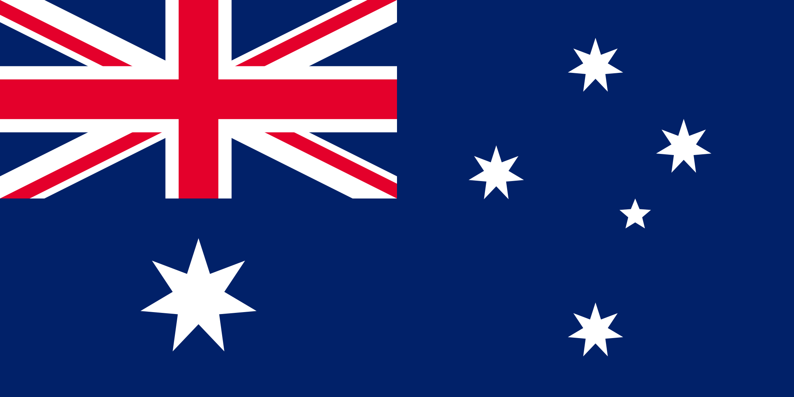
Aspect 2 · 24 crops
Accepted together: AUS
Nearest designs: NZL, FJI, FSM, NRU, SOM
Aspect 1.5 · 24 crops
Accepted together: AUT
Nearest designs: LVA, DNK, CHE, BHR, TUN
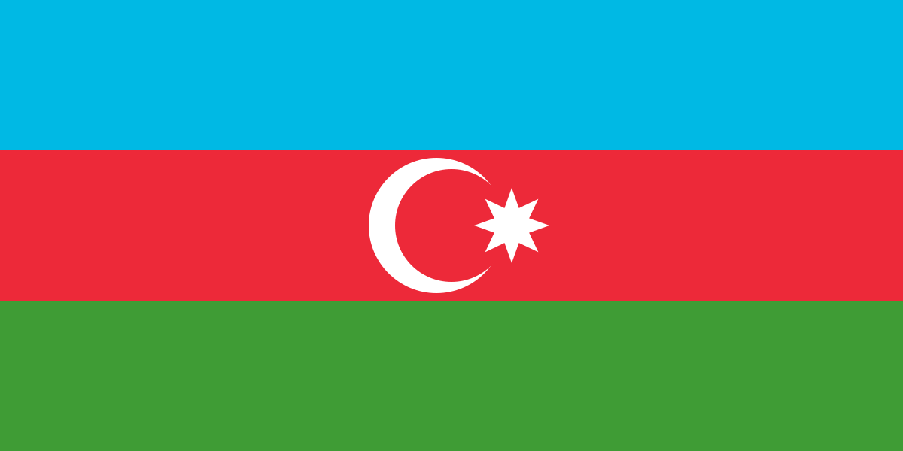
Aspect 2 · 24 crops
Accepted together: AZE
Nearest designs: UZB, MWI, BLR, RWA, BFA
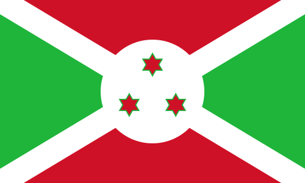
Aspect 1.66666667 · 24 crops
Accepted together: BDI
Nearest designs: BGR, ITA, IRN, MEX, TJK
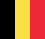
Aspect 1.15384615 · 24 crops
Accepted together: BEL, DEU
Nearest designs: MLI, ROU, TCD, DEU, AND
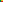
Aspect 1.5 · 20 crops
Accepted together: BEN
Nearest designs: COG, SEN, CMR, MLI, MMR
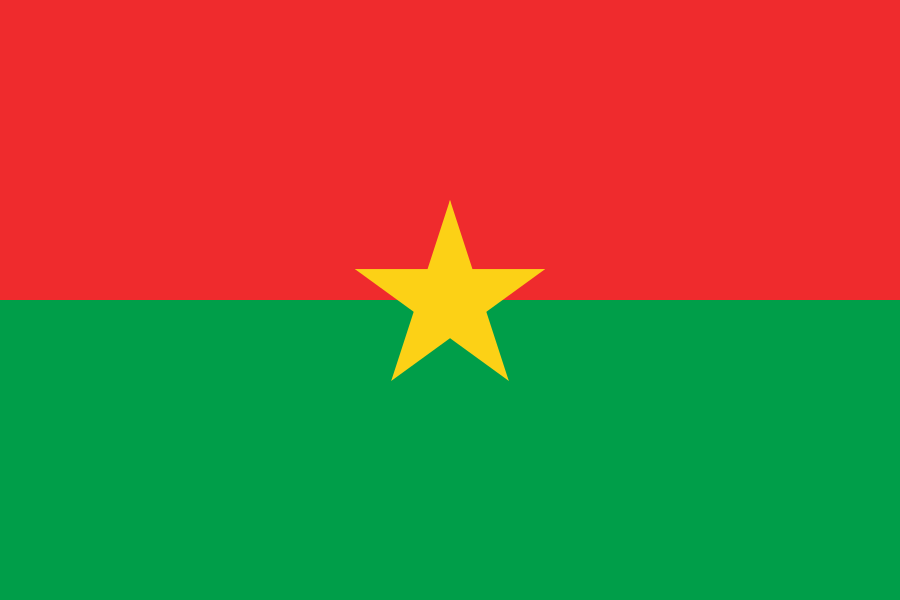
Aspect 1.5 · 20 crops
Accepted together: BFA
Nearest designs: BLR, BOL, GHA, GMB, HUN
Aspect 1.66666667 · 24 crops
Accepted together: BGD
Nearest designs: SAU, TKM, DMA, ZMB, BRA
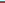
Aspect 1.66666667 · 24 crops
Accepted together: BGR, HUN, ITA, MDG
Nearest designs: BDI, POL, RUS, SVN, SVK
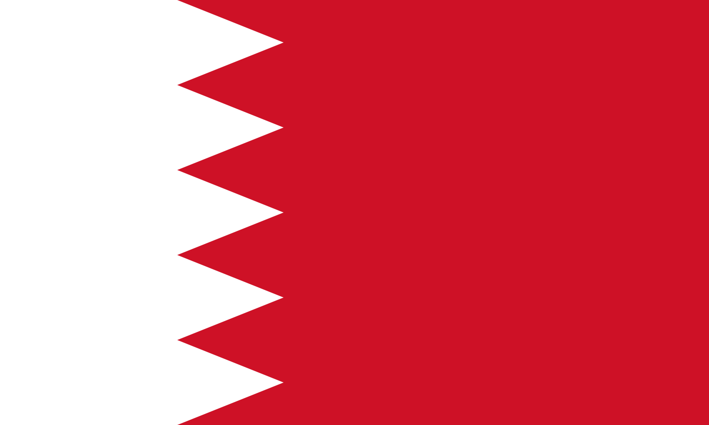
Aspect 1.66666667 · 19 crops
Accepted together: BHR
Nearest designs: MLT, TON, AUT, LVA, TUR
Aspect 2 · 24 crops
Accepted together: BHS
Nearest designs: KAZ, LCA, TUV, RWA, MOZ
Aspect 2 · 24 crops
Accepted together: BIH
Nearest designs: BRB, NRU, PLW, SWE, FSM
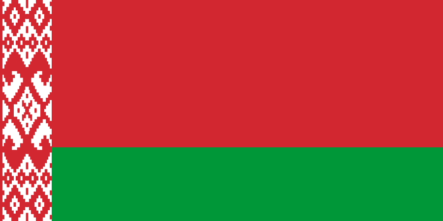
Aspect 2 · 24 crops
Accepted together: BLR
Nearest designs: BFA, OMN, MDV, HUN, GMB
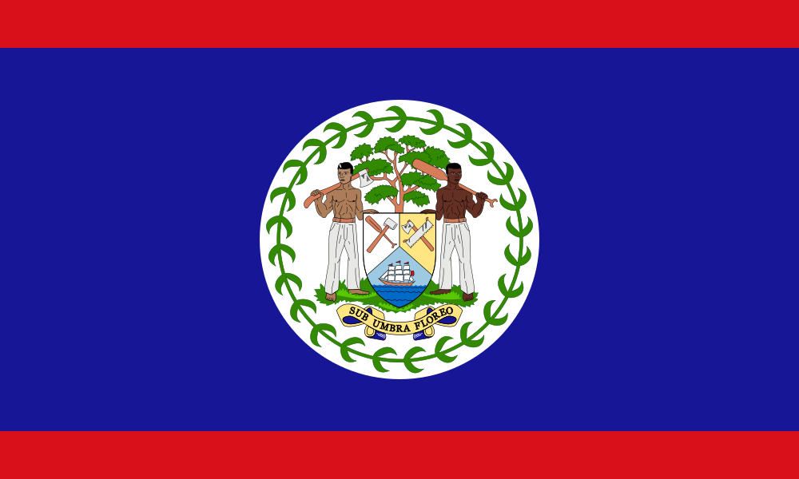
Aspect 1.66666667 · 24 crops
Accepted together: BLZ
Nearest designs: FJI, LAO, ISL, NZL, AUS
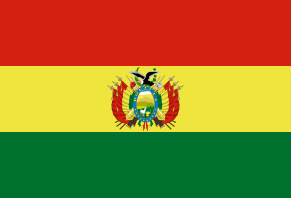
Aspect 1.46666465 · 9 crops
Accepted together: BOL
Nearest designs: GHA, BFA, GMB, HUN, GNB
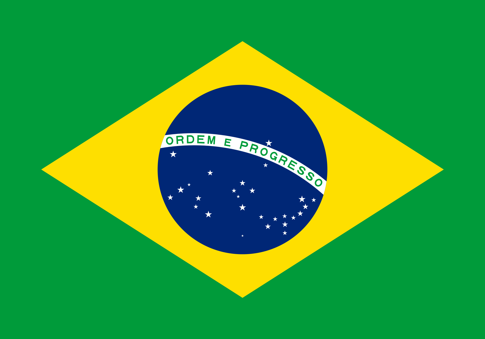
Aspect 1.42857143 · 24 crops
Accepted together: BRA
Nearest designs: SAU, DMA, BGD, TKM, STP
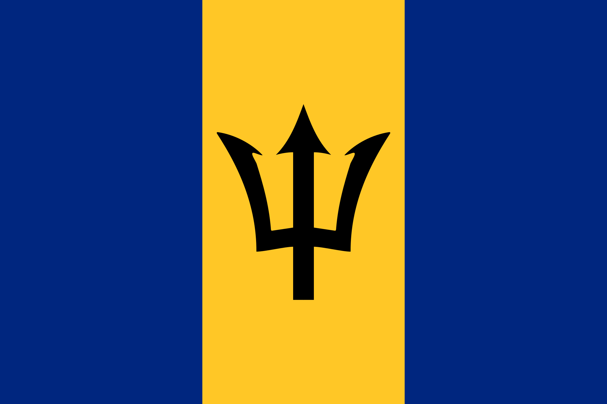
Aspect 1.5 · 24 crops
Accepted together: BRB
Nearest designs: BIH, SWE, PLW, NRU, GTM
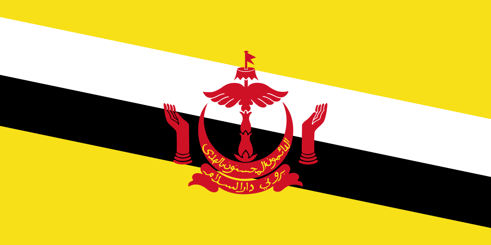
Aspect 2 · 24 crops
Accepted together: BRN
Nearest designs: VAT, BTN, UGA, DEU, ZWE
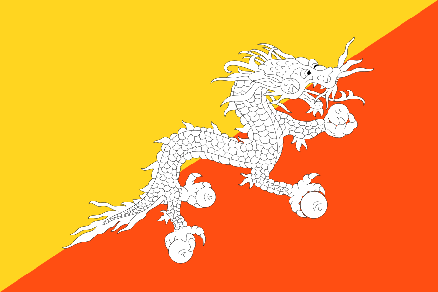
Aspect 1.5 · 24 crops
Accepted together: BTN
Nearest designs: MMR, ESP, ECU, COL, VEN
Aspect 1.5 · 24 crops
Accepted together: BWA
Nearest designs: SOM, FSM, ARG, NIC, SLV
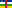
Aspect 1.5 · 24 crops
Accepted together: CAF
Nearest designs: COM, LSO, SYC, DJI, NAM

Aspect 2 · 24 crops
Accepted together: CAN
Nearest designs: PER, BHR, AUT, TON, DNK
Aspect 1 · 24 crops
Accepted together: CHE
Nearest designs: LVA, TUN, DNK, AUT, TUR
Aspect 1.5 · 24 crops
Accepted together: CHL
Nearest designs: CZE, POL, SVK, RUS, SVN
Aspect 1.5 · 21 crops
Accepted together: CHN
Nearest designs: MAR, TUR, VNM, KGZ, TUN
Aspect 1.5 · 24 crops
Accepted together: CIV, IRL
Nearest designs: IRL, NGA, IND, NER, PAK
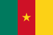
Aspect 1.5 · 24 crops
Accepted together: CMR
Nearest designs: BEN, COG, MLI, SEN, GHA
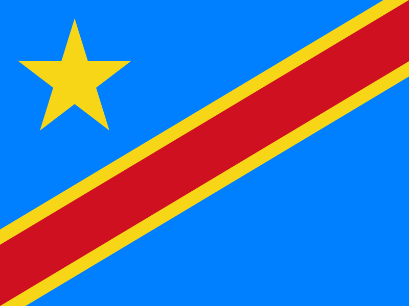
Aspect 1.33333333 · 24 crops
Accepted together: COD
Nearest designs: NRU, PLW, FJI, SOM, FSM
Aspect 1.5 · 24 crops
Accepted together: COG
Nearest designs: MLI, BEN, SEN, CMR, GRD
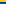
Aspect 1.5 · 24 crops
Accepted together: COL
Nearest designs: ECU, VEN, BTN, ESP, MMR
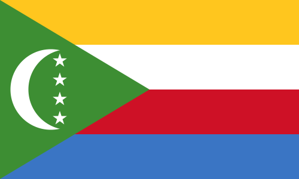
Aspect 1.66666667 · 24 crops
Accepted together: COM
Nearest designs: CAF, BEN, MMR, COG, ZAF
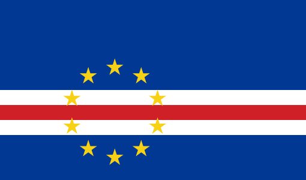
Aspect 1.7 · 24 crops
Accepted together: CPV
Nearest designs: NIC, HND, SLV, ARG, NRU
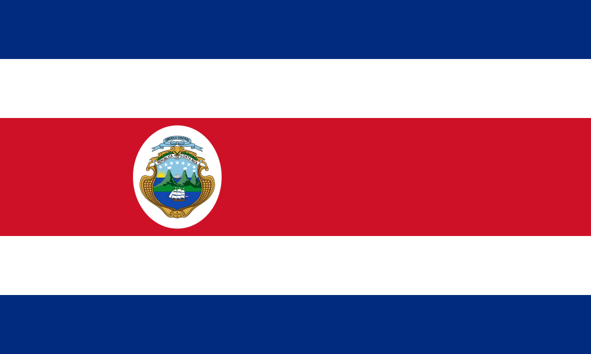
Aspect 1.66666667 · 24 crops
Accepted together: CRI
Nearest designs: THA, GBR, MYS, CUB, FRA
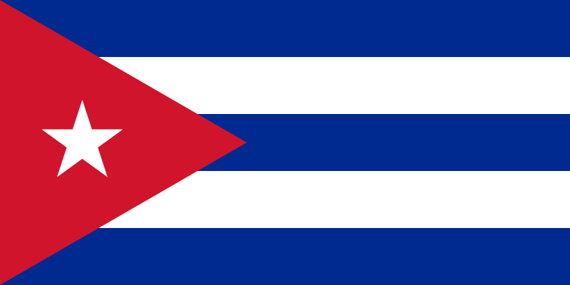
Aspect 2 · 24 crops
Accepted together: CUB
Nearest designs: KHM, CRI, CPV, FJI, AUS
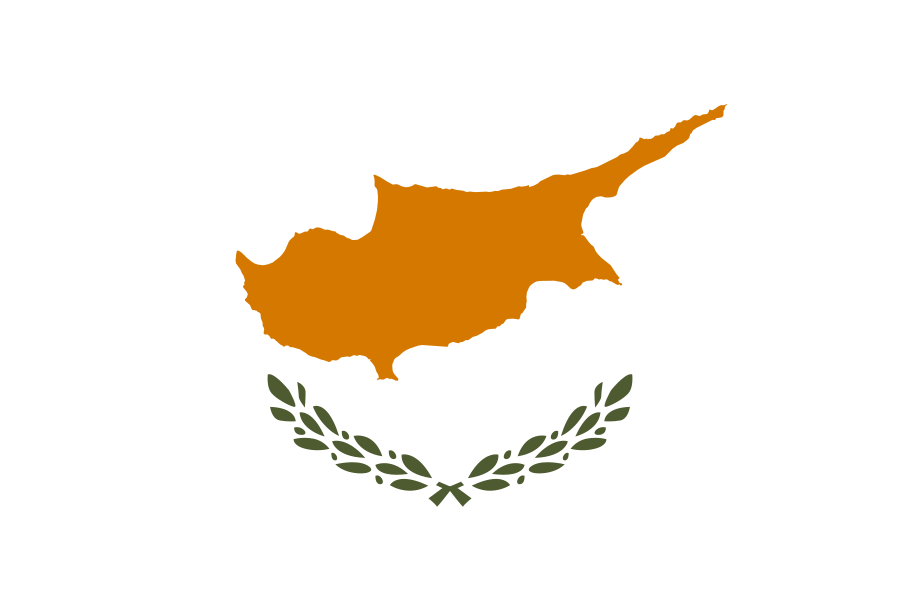
Aspect 1.5 · 24 crops
Accepted together: CYP
Nearest designs: JPN, KOR, ISR, GEO, FIN
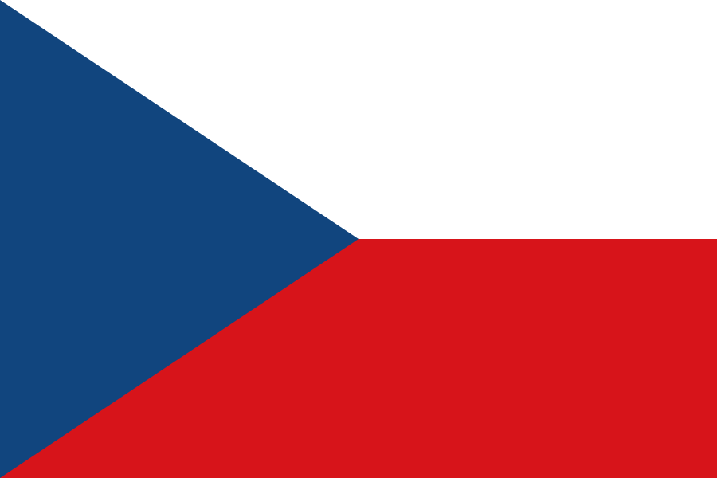
Aspect 1.5 · 24 crops
Accepted together: CZE
Nearest designs: CHL, RUS, SVK, SVN, POL

Aspect 1.66666667 · 24 crops
Accepted together: BEL, DEU
Nearest designs: UGA, BEL, MWI, KEN, MOZ
Aspect 1.5 · 24 crops
Accepted together: DJI
Nearest designs: LSO, SLB, MDG, PAK, NAM
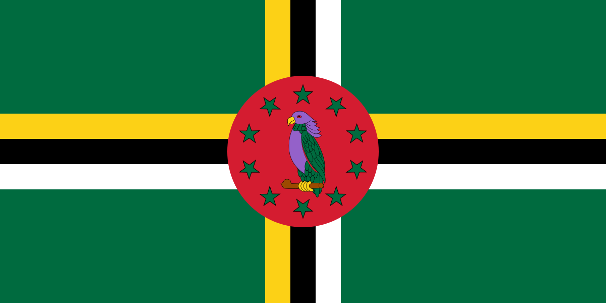
Aspect 2 · 24 crops
Accepted together: DMA
Nearest designs: BGD, BRA, NGA, SAU, TKM
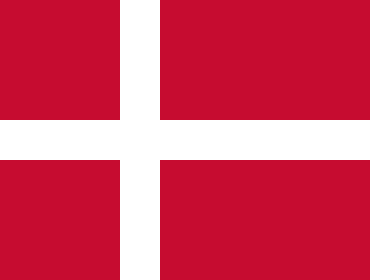
Aspect 1.32142857 · 24 crops
Accepted together: DNK
Nearest designs: LVA, AUT, CHE, TUN, TON
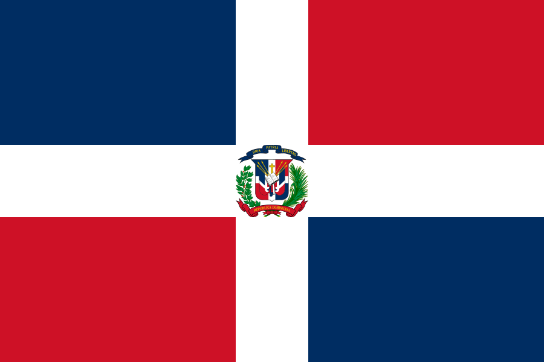
Aspect 1.5 · 24 crops
Accepted together: DOM
Nearest designs: NLD, PRY, HRV, FRA, USA
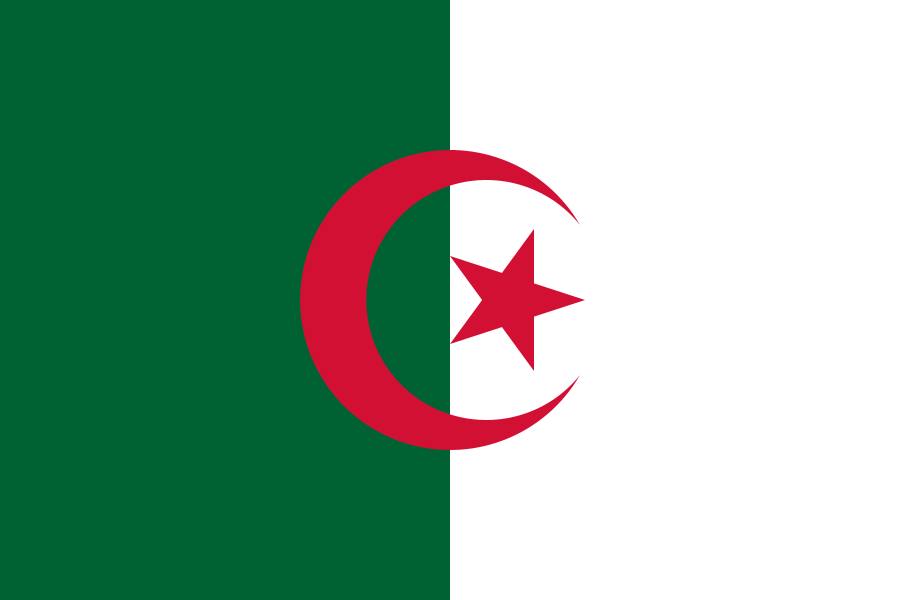
Aspect 1.5 · 24 crops
Accepted together: DZA
Nearest designs: NGA, ITA, MEX, IRL, TJK
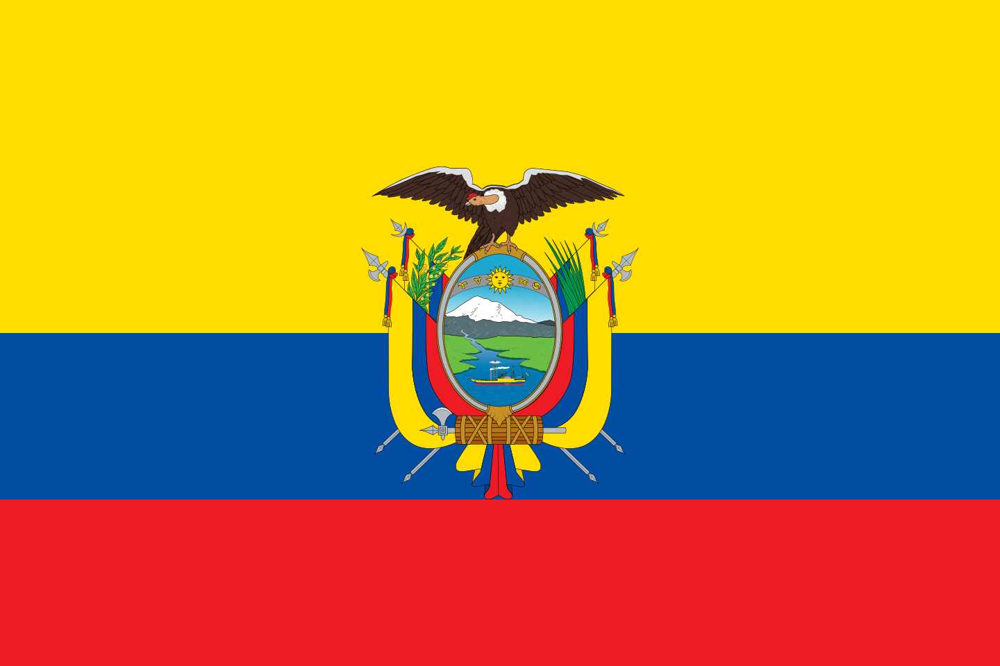
Aspect 1.5 · 24 crops
Accepted together: ECU
Nearest designs: COL, VEN, BTN, MMR, ESP
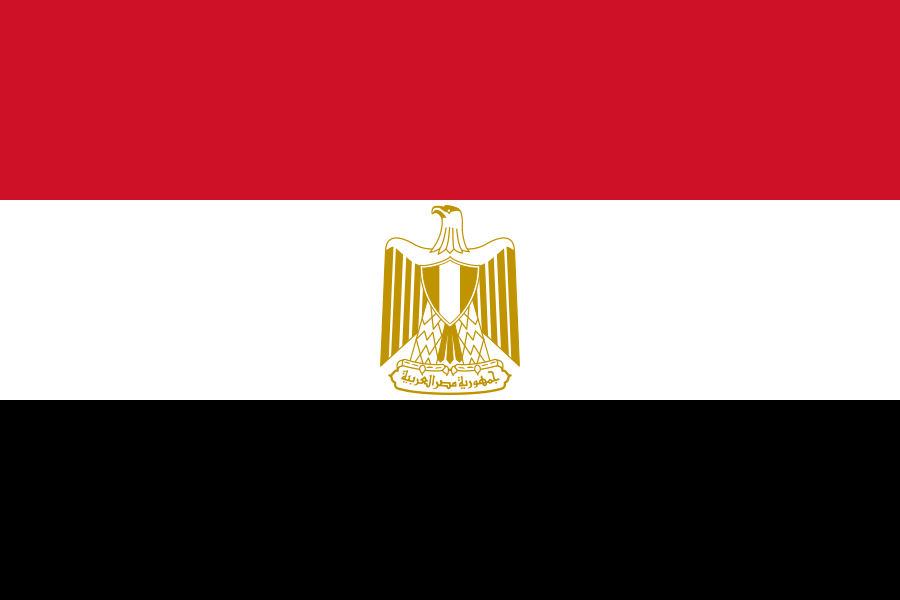
Aspect 1.5 · 24 crops
Accepted together: EGY
Nearest designs: YEM, IRQ, SDN, AGO, SYR
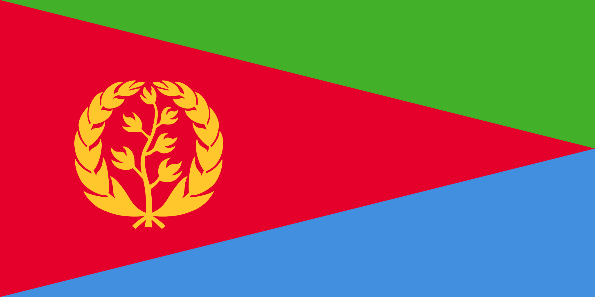
Aspect 2 · 24 crops
Accepted together: ERI
Nearest designs: PRK, KIR, SUR, MNG, BLR
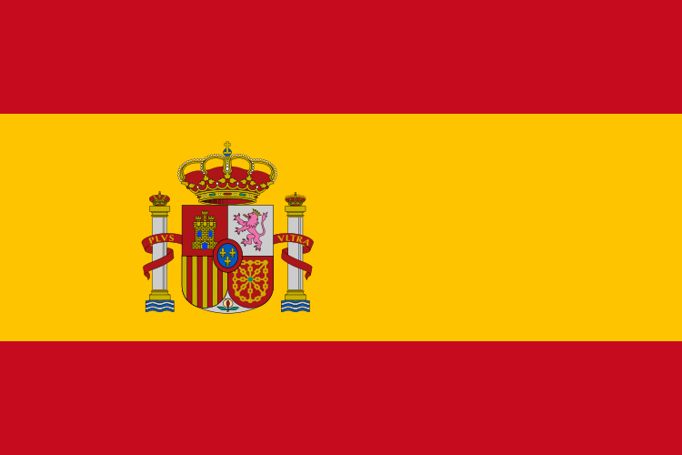
Aspect 1.5 · 24 crops
Accepted together: ESP
Nearest designs: MKD, BTN, KGZ, COL, ECU
Aspect 1.57142857 · 24 crops
Accepted together: EST
Nearest designs: BWA, MYS, LSO, CRI, ISR
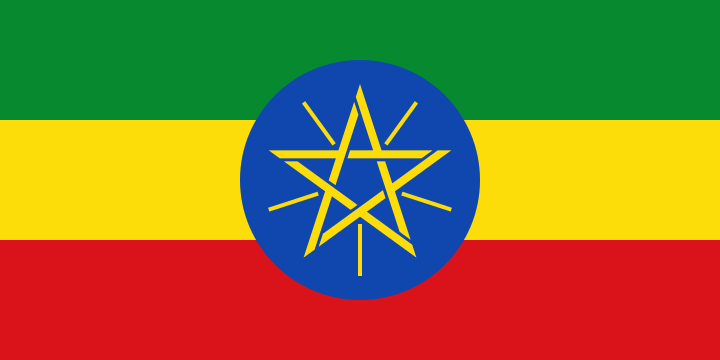
Aspect 2 · 24 crops
Accepted together: ETH
Nearest designs: GNQ, GAB, IRN, BEN, COG

Aspect 1.63636364 · 24 crops
Accepted together: FIN
Nearest designs: URY, ISR, THA, SMR, KOR
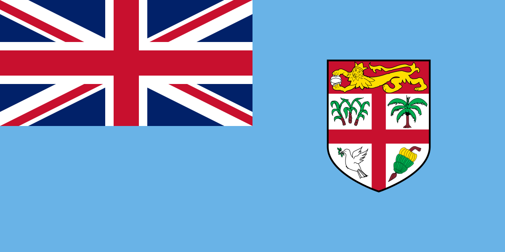
Aspect 2 · 24 crops
Accepted together: FJI
Nearest designs: AUS, NZL, FSM, NRU, CPV

Aspect 1.5 · 24 crops
Accepted together: FRA, NLD, RUS, THA
Nearest designs: CZE, DOM, PAN, NLD, RUS
Aspect 1.9 · 24 crops
Accepted together: FSM
Nearest designs: SOM, NRU, NZL, PLW, AUS
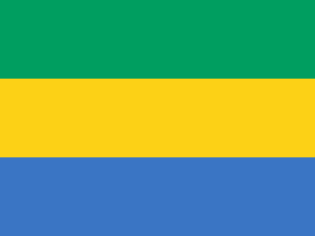
Aspect 1.33333333 · 24 crops
Accepted together: GAB
Nearest designs: SLE, SWE, ETH, VCT, BRA
Aspect 2 · 24 crops
Accepted together: GBR
Nearest designs: CRI, MYS, PRK, CZE, GEO
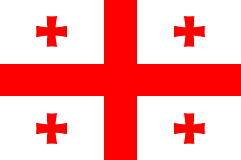
Aspect 1.5 · 24 crops
Accepted together: GEO
Nearest designs: JPN, SGP, IDN, POL, MCO
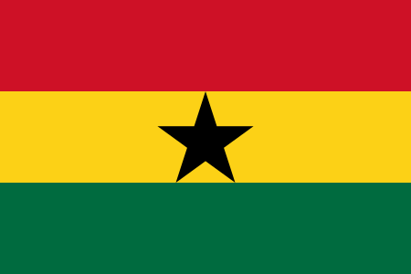
Aspect 1.5 · 24 crops
Accepted together: GHA
Nearest designs: BOL, BFA, GMB, GNB, HUN
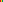
Aspect 1.5 · 24 crops
Accepted together: GIN, MLI
Nearest designs: GNB, GRD, TGO, MLI, BOL
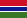
Aspect 1.5 · 24 crops
Accepted together: GMB
Nearest designs: HUN, BOL, BFA, GHA, BLR
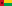
Aspect 2 · 24 crops
Accepted together: GNB
Nearest designs: GIN, GHA, BOL, TGO, MMR
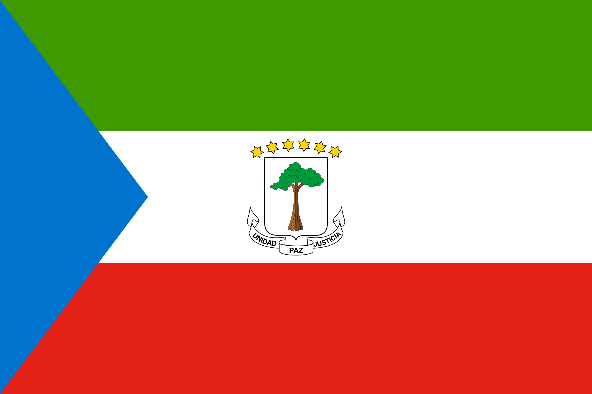
Aspect 1.5 · 24 crops
Accepted together: GNQ
Nearest designs: IRN, KWT, ETH, ARE, SLE
Aspect 1.5 · 24 crops
Accepted together: GRC
Nearest designs: NIC, HND, SLV, ARG, GTM
Aspect 1.66666667 · 24 crops
Accepted together: GRD
Nearest designs: GIN, MLI, COG, SEN, MMR
Aspect 1.6 · 24 crops
Accepted together: GTM
Nearest designs: SLV, NIC, HND, ARG, CPV
Aspect 1.66666667 · 24 crops
Accepted together: GUY
Nearest designs: STP, TGO, SUR, GIN, BGD
Aspect 2 · 24 crops
Accepted together: HND
Nearest designs: NIC, SLV, ARG, ISL, CPV
Aspect 2 · 24 crops
Accepted together: HRV
Nearest designs: PRY, NLD, KIR, DOM, PAN
Aspect 1.66666667 · 23 crops
Accepted together: HTI
Nearest designs: LIE, PHL, WSM, LAO, KHM

Aspect 2 · 24 crops
Accepted together: BGR, HUN, ITA, MDG
Nearest designs: TJK, MDG, GMB, BLR, BFA

Aspect 1.5 · 14 crops
Accepted together: IDN, MCO, POL
Nearest designs: SGP, MLT, LBN, GEO, CAN
Aspect 1.5 · 8 crops
Accepted together: IND
Nearest designs: NER, CIV, IRL, HUN, UZB
Aspect 2 · 24 crops
Accepted together: CIV, IRL
Nearest designs: NGA, CIV, ITA, IND, MEX
Aspect 1.75 · 24 crops
Accepted together: IRN
Nearest designs: GNQ, KWT, BGR, ARE, BDI
Aspect 1.5 · 24 crops
Accepted together: IRQ
Nearest designs: YEM, EGY, SDN, AGO, SYR
Aspect 1.38888889 · 24 crops
Accepted together: ISL
Nearest designs: NIC, HND, SLV, ARG, CPV

Aspect 1.375 · 24 crops
Accepted together: ISR
Nearest designs: URY, FIN, KOR, CYP, SMR

Aspect 1.5 · 24 crops
Accepted together: BGR, HUN, ITA, MDG
Nearest designs: MEX, BDI, PRT, FRA, MLI
Aspect 2 · 24 crops
Accepted together: JAM
Nearest designs: LBY, VUT, NER, IND, SYR
Aspect 2 · 24 crops
Accepted together: JOR
Nearest designs: PSE, KEN, SSD, MWI, ARE

Aspect 1.5 · 24 crops
Accepted together: JPN
Nearest designs: KOR, CYP, GEO, SGP, ISR
Aspect 2 · 24 crops
Accepted together: KAZ
Nearest designs: LCA, TUV, BHS, RWA, AZE
Aspect 1.5 · 24 crops
Accepted together: KEN
Nearest designs: MWI, JOR, SSD, PSE, AFG
Aspect 1.66666667 · 24 crops
Accepted together: KGZ
Nearest designs: VNM, CHN, MAR, TUN, TUR
Aspect 1.5625 · 24 crops
Accepted together: KHM
Nearest designs: SWZ, PRK, CUB, HTI, LIE
Aspect 2 · 24 crops
Accepted together: KIR
Nearest designs: HRV, PRY, NLD, IDN, MCO
Aspect 1.5 · 24 crops
Accepted together: KNA
Nearest designs: TZA, COG, BEN, MLI, SEN
Aspect 1.5 · 24 crops
Accepted together: KOR
Nearest designs: JPN, CYP, ISR, GEO, FIN
Aspect 2 · 24 crops
Accepted together: KWT
Nearest designs: GNQ, IRN, ARE, SYR, AFG
Aspect 1.5 · 24 crops
Accepted together: LAO
Nearest designs: HTI, LIE, NOR, BLZ, MNG
Aspect 1.5 · 24 crops
Accepted together: LBN
Nearest designs: LBR, AUT, USA, TJK, IDN
Aspect 1.9 · 24 crops
Accepted together: LBR
Nearest designs: USA, LBN, CHL, MYS, POL
Aspect 2 · 24 crops
Accepted together: LBY
Nearest designs: VUT, AGO, PNG, AFG, MWI
Aspect 2 · 24 crops
Accepted together: LCA
Nearest designs: KAZ, TUV, BHS, RWA, MOZ
Aspect 1.66666667 · 24 crops
Accepted together: LIE
Nearest designs: HTI, PHL, WSM, LAO, PRK
Aspect 2 · 24 crops
Accepted together: LKA
Nearest designs: NER, QAT, LTU, CIV, ARM
Aspect 1.5 · 24 crops
Accepted together: LSO
Nearest designs: DJI, TJK, ISR, SLE, IND
Aspect 1.66666667 · 24 crops
Accepted together: LTU
Nearest designs: BGR, MRT, MDV, MMR, IND
Aspect 1.66666667 · 24 crops
Accepted together: LUX
Nearest designs: AUT, YEM, HUN, PRY, IRQ
Aspect 2 · 24 crops
Accepted together: LVA
Nearest designs: DNK, AUT, CHE, TUN, TON
Aspect 1.5 · 18 crops
Accepted together: MAR
Nearest designs: CHN, TUR, VNM, KGZ, TUN
Aspect 1.25 · 14 crops
Accepted together: IDN, MCO, POL
Nearest designs: SGP, MLT, LBN, GEO, CAN
Aspect 2 · 24 crops
Accepted together: MDA
Nearest designs: ROU, TCD, AND, FRA, VEN
Aspect 1.5 · 21 crops
Accepted together: BGR, HUN, ITA, MDG
Nearest designs: HUN, TJK, BFA, BHR, GMB
Aspect 1.5 · 24 crops
Accepted together: MDV
Nearest designs: MRT, BLR, MAR, PRT, TUN
Aspect 1.75 · 24 crops
Accepted together: MEX
Nearest designs: ITA, PRT, MLI, SEN, BGR
Aspect 1.9 · 24 crops
Accepted together: MHL
Nearest designs: FSM, SOM, NRU, ARG, CPV
Aspect 2 · 24 crops
Accepted together: MKD
Nearest designs: MNE, VNM, KGZ, CHN, MAR
Aspect 1.5 · 24 crops
Accepted together: GIN, MLI
Nearest designs: SEN, COG, BEN, PRT, GRD
Aspect 1.5 · 22 crops
Accepted together: MLT
Nearest designs: BHR, IDN, POL, SGP, MCO
Aspect 1.5 · 24 crops
Accepted together: MMR
Nearest designs: BEN, VEN, GRD, BTN, GNB
Aspect 2 · 24 crops
Accepted together: MNE
Nearest designs: VNM, KGZ, CHN, MAR, MKD
Aspect 2 · 24 crops
Accepted together: MNG
Nearest designs: PRK, WSM, LIE, NOR, KGZ
Aspect 1.5 · 24 crops
Accepted together: MOZ
Nearest designs: DEU, UGA, BHS, RWA, AZE
Aspect 1.5 · 24 crops
Accepted together: MRT
Nearest designs: MDV, BFA, GRD, PRT, BDI
Aspect 1.5 · 24 crops
Accepted together: MUS
Nearest designs: BOL, GHA, GMB, TGO, NAM
Aspect 1.5 · 24 crops
Accepted together: MWI
Nearest designs: KEN, JOR, VUT, BFA, BLR

Aspect 2 · 24 crops
Accepted together: MYS
Nearest designs: CRI, USA, THA, LBR, GBR
Aspect 1.5 · 24 crops
Accepted together: NAM
Nearest designs: GMB, SLB, SYC, SSD, DJI
Aspect 1.16666667 · 24 crops
Accepted together: NER
Nearest designs: IND, CIV, IRL, HUN, UZB
Aspect 2 · 24 crops
Accepted together: NGA
Nearest designs: PAK, SAU, IRL, DMA, CIV
Aspect 1.66666667 · 24 crops
Accepted together: NIC
Nearest designs: HND, SLV, ARG, ISL, CPV
Aspect 1.5 · 24 crops
Accepted together: FRA, NLD, RUS, THA
Nearest designs: PRY, HRV, KIR, DOM, PAN

Aspect 1.375 · 24 crops
Accepted together: NOR
Nearest designs: DNK, AUT, LVA, CHE, LAO
Aspect 0.8203356 · 24 crops
Accepted together: NPL
Nearest designs: NOR, PRK, WSM, TUR, CHE
Aspect 2 · 24 crops
Accepted together: NRU
Nearest designs: FSM, SOM, PLW, NZL, AUS
Aspect 2 · 24 crops
Accepted together: NZL
Nearest designs: AUS, FJI, FSM, NRU, SOM
Aspect 2 · 24 crops
Accepted together: OMN
Nearest designs: BLR, CAN, SUR, POL, PER

Aspect 1.5 · 24 crops
Accepted together: PAK
Nearest designs: SAU, NGA, TKM, MDG, BGD
Aspect 1.5 · 24 crops
Accepted together: PAN
Nearest designs: FRA, NLD, PRY, HRV, SGP
Aspect 1.5 · 24 crops
Accepted together: PER
Nearest designs: CAN, CHE, TUN, DNK, AUT
Aspect 2 · 24 crops
Accepted together: PHL
Nearest designs: LIE, HTI, SVN, RUS, SVK
Aspect 1.6 · 24 crops
Accepted together: PLW
Nearest designs: NRU, SOM, FSM, SWE, BRB
Aspect 1.33333333 · 24 crops
Accepted together: PNG
Nearest designs: AGO, TLS, EGY, BEL, YEM
Aspect 1.6 · 14 crops
Accepted together: IDN, MCO, POL
Nearest designs: CHL, CZE, MLT, SVK, BGR
Aspect 2 · 24 crops
Accepted together: PRK
Nearest designs: KHM, WSM, MNG, GBR, TUR
Aspect 1.5 · 24 crops
Accepted together: PRT
Nearest designs: SEN, MLI, MEX, ITA, MDV
Aspect 1.81818182 · 24 crops
Accepted together: PRY
Nearest designs: NLD, HRV, KIR, DOM, PAN
Aspect 2 · 24 crops
Accepted together: PSE
Nearest designs: JOR, SSD, KEN, ARE, MWI
Aspect 2.54545455 · 24 crops
Accepted together: QAT
Nearest designs: SRB, BHR, JPN, MDG, CYP

Aspect 1.5 · 24 crops
Accepted together: ROU, TCD
Nearest designs: AND, MDA, MLI, FRA, VEN

Aspect 1.5 · 24 crops
Accepted together: FRA, NLD, RUS, THA
Nearest designs: SVN, SVK, THA, CZE, CHL
Aspect 1.5 · 24 crops
Accepted together: RWA
Nearest designs: AZE, UZB, BHS, LCA, MUS
Aspect 1.5 · 24 crops
Accepted together: SAU
Nearest designs: TKM, BGD, ZMB, PAK, BRA
Aspect 2 · 24 crops
Accepted together: SDN
Nearest designs: IRQ, YEM, EGY, ARE, SYR
Aspect 1.5 · 24 crops
Accepted together: SEN
Nearest designs: MLI, COG, BEN, PRT, GRD
Aspect 1.5 · 24 crops
Accepted together: SGP
Nearest designs: IDN, MCO, MLT, GEO, LBN
Aspect 2 · 24 crops
Accepted together: SLB
Nearest designs: NAM, DJI, VCT, LSO, BRA
Aspect 1.5 · 24 crops
Accepted together: SLE
Nearest designs: GAB, NLD, NIC, PRY, HND
Aspect 1.77248677 · 24 crops
Accepted together: SLV
Nearest designs: NIC, HND, ARG, ISL, CPV
Aspect 1.33333333 · 24 crops
Accepted together: SMR
Nearest designs: URY, GRC, FIN, ISR, GTM
Aspect 1.5 · 16 crops
Accepted together: SOM
Nearest designs: FSM, NRU, PLW, NZL, AUS
Aspect 1.49999008 · 24 crops
Accepted together: SRB
Nearest designs: FIN, URY, THA, MYS, QAT
Aspect 2 · 24 crops
Accepted together: SSD
Nearest designs: JOR, PSE, KEN, MWI, NAM
Aspect 2 · 24 crops
Accepted together: STP
Nearest designs: TGO, GUY, GNB, BRA, GIN
Aspect 1.5 · 24 crops
Accepted together: SUR
Nearest designs: GUY, BFA, OMN, PRT, BLR
Aspect 1.5 · 24 crops
Accepted together: SVK
Nearest designs: RUS, SVN, CZE, CHL, THA
Aspect 2 · 24 crops
Accepted together: SVN
Nearest designs: RUS, SVK, CZE, THA, CHL

Aspect 1.6 · 24 crops
Accepted together: SWE
Nearest designs: PLW, BRB, BIH, NRU, BWA
Aspect 1.5 · 24 crops
Accepted together: SWZ
Nearest designs: KHM, PRK, ROU, TCD, MDA
Aspect 2 · 24 crops
Accepted together: SYC
Nearest designs: NAM, GMB, MYS, HUN, MUS
Aspect 1.5 · 24 crops
Accepted together: SYR
Nearest designs: ARE, IRQ, YEM, KWT, EGY
Aspect 1.5 · 24 crops
Accepted together: ROU, TCD
Nearest designs: AND, MDA, MLI, FRA, VEN
Aspect 1.618 · 24 crops
Accepted together: TGO
Nearest designs: STP, GUY, GIN, GNB, GHA

Aspect 1.5 · 24 crops
Accepted together: FRA, NLD, RUS, THA
Nearest designs: RUS, SVN, SVK, CRI, MYS
Aspect 2 · 24 crops
Accepted together: TJK
Nearest designs: HUN, LBN, MDG, LSO, BDI
Aspect 1.5 · 24 crops
Accepted together: TKM
Nearest designs: SAU, BGD, ZMB, PAK, BRA
Aspect 2 · 24 crops
Accepted together: TLS
Nearest designs: KGZ, ALB, VNM, CHN, MNE
Aspect 2 · 23 crops
Accepted together: TON
Nearest designs: TUR, LVA, CHN, MAR, TUN
Aspect 1.66666667 · 24 crops
Accepted together: TTO
Nearest designs: ALB, TUN, TUR, CHN, MAR
Aspect 1.5 · 24 crops
Accepted together: TUN
Nearest designs: TUR, CHN, MAR, VNM, KGZ

Aspect 1.5 · 24 crops
Accepted together: TUR
Nearest designs: CHN, MAR, VNM, TUN, KGZ
Aspect 2 · 24 crops
Accepted together: TUV
Nearest designs: KAZ, LCA, BHS, LUX, RWA
Aspect 1.5 · 24 crops
Accepted together: TZA
Nearest designs: KNA, SYR, BHS, VUT, COG
Aspect 1.5 · 24 crops
Accepted together: UGA
Nearest designs: DEU, BEL, BTN, MMR, GRD
Aspect 1.5 · 14 crops
Accepted together: UKR
Nearest designs: SWE, BRB, PLW, BIH, NRU
Aspect 1.5 · 24 crops
Accepted together: URY
Nearest designs: ISR, FIN, SMR, PAN, KOR
Aspect 1.9 · 24 crops
Accepted together: USA
Nearest designs: LBR, LBN, CHL, DOM, MYS
Aspect 2 · 24 crops
Accepted together: UZB
Nearest designs: AZE, HUN, IND, TJK, RWA
Aspect 1 · 24 crops
Accepted together: VAT
Nearest designs: BRN, BTN, DZA, CYP, KOR
Aspect 1.5 · 24 crops
Accepted together: VCT
Nearest designs: GIN, GAB, ROU, TCD, SLB
Aspect 1.5 · 24 crops
Accepted together: VEN
Nearest designs: COL, ECU, MMR, ROU, TCD
Aspect 1.5 · 21 crops
Accepted together: VNM
Nearest designs: CHN, KGZ, MAR, TUR, TUN
Aspect 1.66666667 · 24 crops
Accepted together: VUT
Nearest designs: LBY, GHA, MWI, BOL, AFG
Aspect 2 · 21 crops
Accepted together: WSM
Nearest designs: TON, CHN, MAR, TUR, LIE
Aspect 1.5 · 24 crops
Accepted together: YEM
Nearest designs: IRQ, EGY, SDN, AGO, SYR
Aspect 1.5 · 24 crops
Accepted together: ZAF
Nearest designs: GMB, NAM, NLD, PRY, COM
Aspect 1.5 · 24 crops
Accepted together: ZMB
Nearest designs: SAU, TKM, BGD, DMA, BRA
Aspect 2 · 24 crops
Accepted together: ZWE
Nearest designs: VUT, SUR, GUY, GHA, KWT